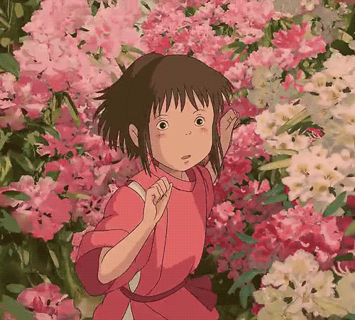
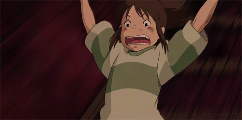

Тихиро

Тихиро Огино (яп. 荻野 千尋 Огино Тихиро) (сэйю: Руми Хиираги) — главная героиня фильма. В интервью создатель фильма Хаяо Миядзаки упоминает, что Тихиро — самая обычная десятилетняя девочка. Сэйю Хиираги Руми, озвучившая Тихиро для фильма, даёт несколько иную характеристику Тихиро: «Она своенравная и балованная, очень похожа на современных девочек». В начале фильма Тихиро капризничает, она явно недовольна переездом и заранее считает свою будущую школу скучной и неинтересной. С развитием сюжета Тихиро проявляет свои лучшие черты характера — она ответственна, терпелива и бескорыстна.

Юбаба даёт девочке имя Сэн (яп. 千) взамен её собственного Тихиро (яп. 千尋). Слово «тихиро» переводится как «бездонная глубина»; дословно — тысяча хиро (хиро — мера глубины, 1,81 метра). Иероглиф 千 может читаться и как сэн.